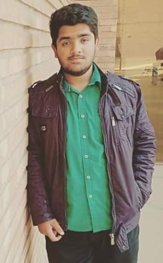

Khawaja Mustafa Shahid
D.O.B: 30/05/2000.
Contact number: 032-44871082.
CNIC: 35202-7148233-7.
Religion: Islam.
Address: 172-Nishter Block Allama Iqbal town, Lahore.
Career Objectives :
"Secure a responsible career opportunity to fully utilized my training
and skills, while making a significant contribution to the success of
the organization. Want to engaged My-self in my personal abilities."
Experience :
- Inter-Netsol Technologies (Till March 2020)
The work at Netsol is the practical example of the meaning of Computer Sciences, a friendly working environment and there is always a chance of growth here. I worked there as an intern for about a year
- Volunteership-WWF
As WWF is a worldwide organization formed for protection of wildLife, i gained much experience of communication, research and it was a nobble cause as its a non-government funded organization.
- Intern-SimSim
At finja in the Marketing of their all new Sim Sim Application at several popular Food Events of lahore including Coke Fest, Lahore food Meet. Through this interniship i learned many things about their developed online banking application.
Education :
- BS(Hons.) Computer Sciences- Bahria University Lahore Campus.
Specialization : App development and Web development(Degree in progress).
- Fsc-PreEng- Govt. College of Science Wahdat Road.
Passed with "A" grade performance
- Matric- Allied School
Passed with "A" grade performance
Skills :
- C & C++: -------------------
- HTML & CSS: -------------- ---
- Python: ---------------- -
- MS Office: -------------------
- Communication Skill: -------------------
Strong English and Urdu communication skills.